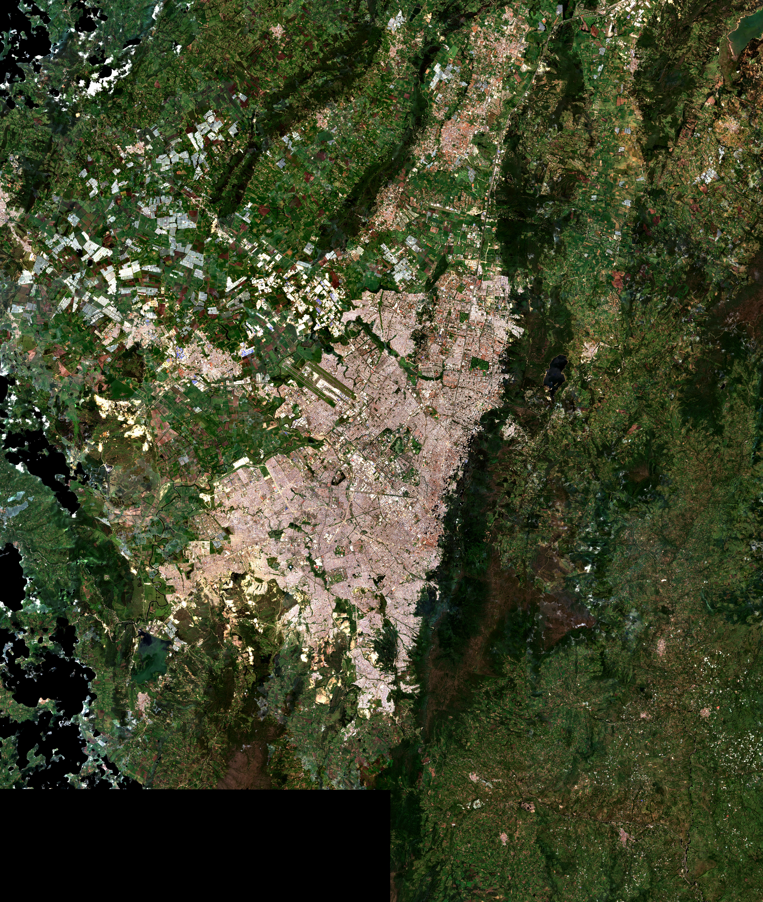
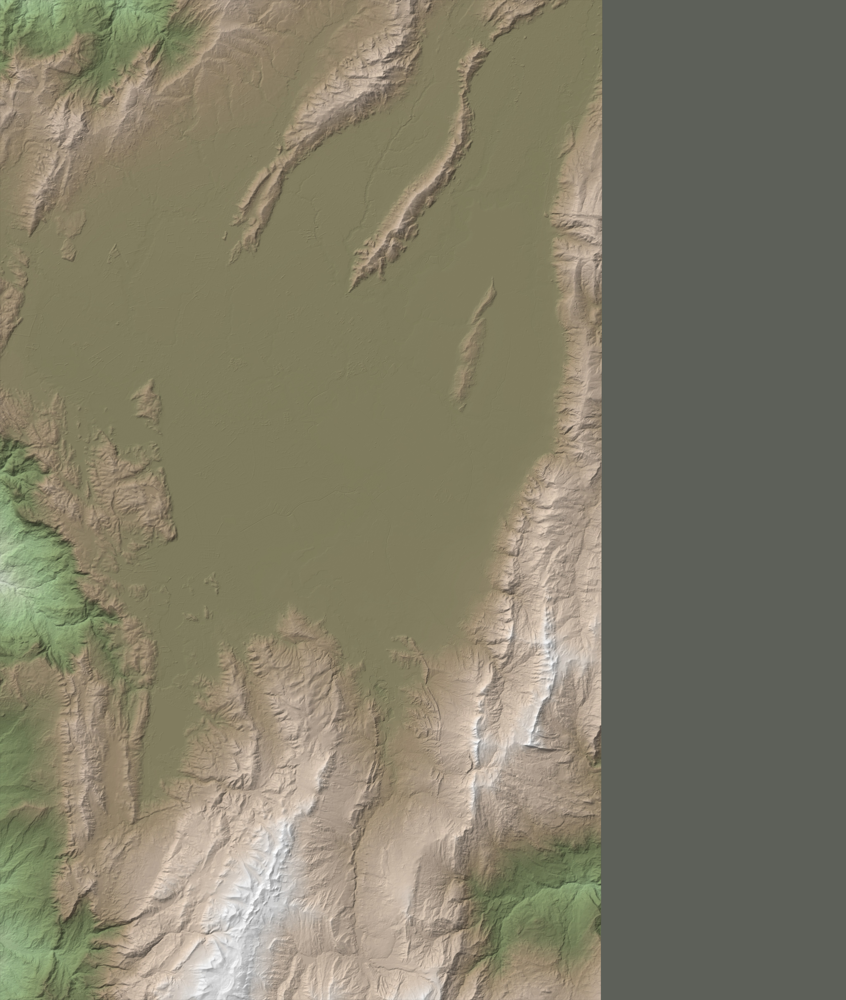
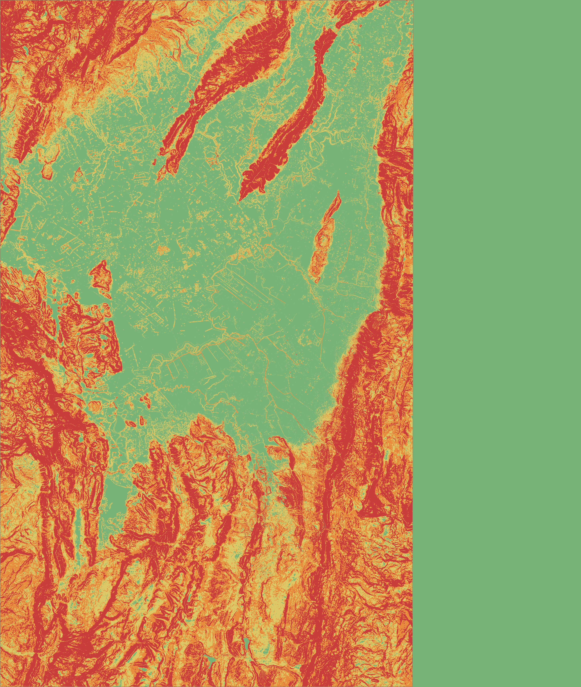

Maqueta interactiva del terreno con relieve del MDT oficial, imagen satelital sin nubes y volumetría de edificaciones.
Kevin Santiago Gómez Tibaquira — Ingeniería Catastral y Geodesia, Universidad Distrital
Trazado ilustrativo

Satelital

Relieve

Pendientes
Localidades
UPL
Sectores
Manzanas valor/estrato
Edificaciones
Estructura ecológica
Cuerpos de agua
Corrientes
Etiquetas
Malla vial
MDT: UAECD 2014 (CC BY-NC-SA 4.0). Copernicus DEM GLO-30 (EGM2008). Fusión: diferencia media 3.289 m, desv. 3.956 m, transición 300 m. Sentinel-2 / ESA. CRS: EPSG:9377. Autor: Kevin Santiago Gómez Tibaquira. Metodología
Punto
Ubicación
,
Manzana
— sin datos —
Terreno-Construcción
— sin datos —
——1 km1.6×MDT UAECD · Copernicus · Sentinel-2
Recorrido guiado
Atajos: H Ayuda · F Sobrevuelo · R Vista general · C Vista cenital · N Norte · I Identificar · Ctrl+K Buscar · Esc Cerrar